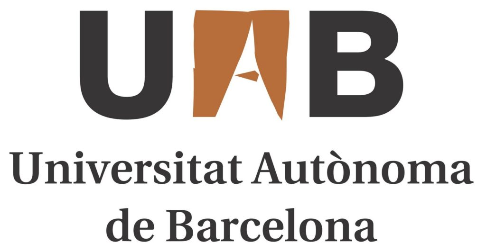
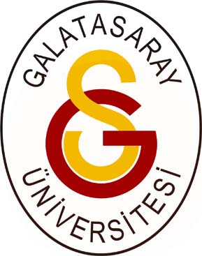

👤 About Me
Hey! I am Mert, a last-year PhD candidate supervised by Frederik Situmeang and Suzan Verberne. My areas of interest are:
- Human-AI trust calibration
- Personalization and its impact on human-computer interaction
- Investigating demographic differences in attitudes towards AI
- Designing trustworthy and secure AI
I am passionate about exploring how humans interact and form connections with AI, as well as how AI alters their perceptions and behavior.
Understanding these relationships will help us develop secure, trustworthy AI systems.
I have experience in running large-scale user studies, designing experiments, and statistical analysis using advanced methods (e.g., multilevel models, SEM).
As a former data scientist, I am proficient in Python and R. I also have experience in fine-tuning neural networks and with agentic systems.
📚 Publications
-
From Chatbots to Confidants: A Cross-Cultural Study of LLM Adoption for Emotional Support , EMNLP'26 (Under Review)
-
The Decision to Verify: How Warmth and User Characteristics Shape Reliance on Conversational Agents for Information Search, Computers in Human Behavior (Under Review)
-
User-Adaptive Personalized Chatbots for Conversational Information Seeking Tasks, CHIIR'25
-
Improving RAG for Personalization with Author Features and Contrastive Examples , ECIR'25
-
Rethinking Conversation Styles of Chatbots from the Customer Perspective: Relationships between Conversation Styles of Chatbots, Chatbot Acceptance, and Perceived Tie Strength and Perceived Risk, International Journal of Human–Computer Interaction
-
The Impact of Quantization on Retrieval-Augmented Generation: An Analysis of Small LLMs, IR-RAG@SIGIR'24
🎓 Education
PhD
Leiden University
February 2023 - Present

MSc in Computer Vision
Universitat Autonoma de Barcelona
September 2021 - September 2022

BSc in Computer Engineering
Galatasaray University
September 2013 - June 2019
💼 Work Experience
Data Scientist
Fibabanka, Istanbul, Turkey
August 2019 - December 2021